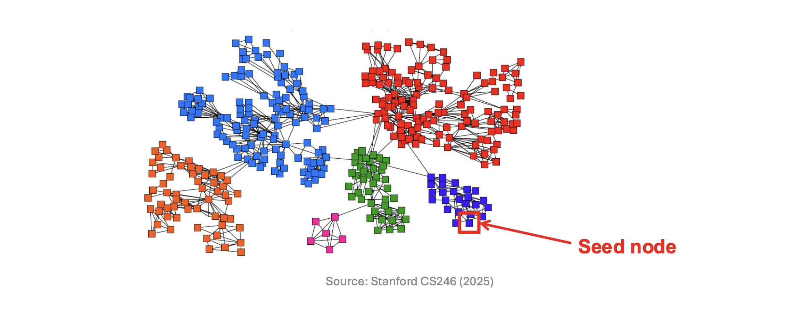
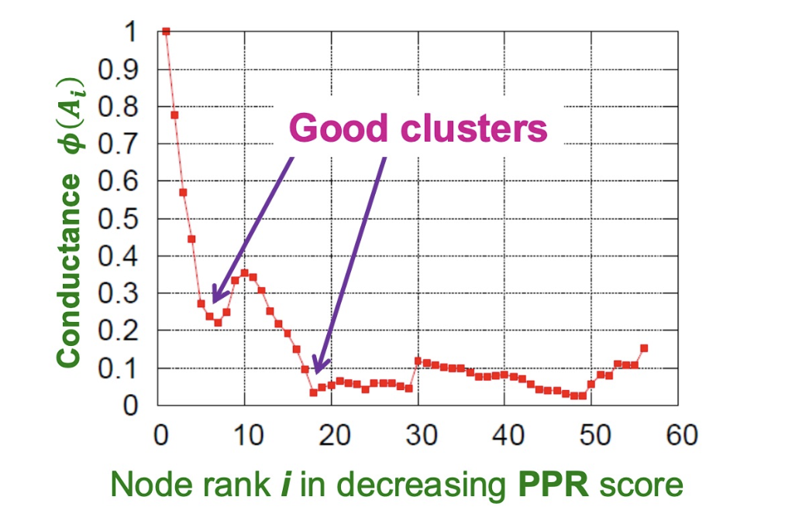

들어가며 (Overview)
이번 포스트는 SNU 데이터 마이닝 강의 “Link Analysis 2”의 내용을 다룹니다. 지난 강의에서 PageRank의 기본 아이디어와 Google Matrix, Sparse Encoding까지 살펴봤습니다. 이번에는 그 위에서 자연스럽게 등장하는 세 가지 큰 주제를 다룹니다.
- Topic-Specific PageRank: 스팸 공격에 대응하는 TrustRank, 그리고 노드 간 근접도(proximity) 측정 도구로서의 Personalized PageRank
- Community Detection: 그래프에서 의미 있는 클러스터를 찾는 방법과 그 품질 지표
- Approximate Personalized PageRank (APPR): 전체 그래프를 탐색하지 않고도 PPR을 효율적으로 근사하는 알고리즘
지난 강의 요약 (Recap)
본격적인 내용에 앞서 지난 시간의 핵심을 간략히 짚고 넘어가겠습니다.
- PageRank는 웹 그래프 위의 무작위 보행(random walk)을 통해 각 노드의 중요도를 정량화합니다.
- Google Matrix는 수렴성과 고유한 정류 분포(stationary distribution)를 보장하기 위해 다음과 같이 정의됩니다.
\[ A = \beta M + (1-\beta) \left[\frac{1}{N}\right]_{N \times N} \]
- \(M\): 열(column) 방향으로 정규화된 하이퍼링크 행렬
- \(\beta\): 링크를 따라갈 확률 (일반적으로 0.8~0.9)
- \((1-\beta)\): 전체 페이지 중 임의의 페이지로 순간이동(teleport)할 확률
- \(N\): 전체 페이지 수
PageRank 벡터 \(\mathbf{r}\)은 \(\mathbf{r} = A\mathbf{r}\) 을 만족하는 고유벡터(eigenvector)로, 거듭제곱 반복법(power iteration)으로 수렴합니다.
1. Topic-Specific PageRank
Google vs. Spammers: Round 2
PageRank는 등장 직후부터 스패머들의 공격 대상이 되었습니다.
- 링크 스팸(Link spam): 특정 페이지의 PageRank를 인위적으로 끌어올리기 위해 링크 구조를 조작하는 행위
- 링크 팜(Link farm): 링크 스팸을 위해 만들어진 페이지들의 집합
스패머 입장에서 웹 페이지는 세 종류로 분류됩니다.
| 종류 | 설명 |
|---|---|
| Owned pages | 스패머가 완전히 통제 가능한 페이지 (다수의 도메인에 걸쳐 있을 수 있음) |
| Accessible pages | 링크를 삽입할 수 있는 페이지 (블로그 댓글, 신문 댓글, Wikipedia 등) |
| Inaccessible pages | 스패머가 손댈 수 없는 대부분의 웹 |
Link Farms
링크 팜의 구조
링크 팜의 최종 목표는 타깃 페이지 \(t\)의 PageRank를 극대화하는 것입니다.
전략적으로: - Accessible 페이지에 \(t\)로 향하는 링크를 심어 외부 유입 점수를 올립니다. - 수백만 개의 Owned 페이지가 \(t\)에 링크를 걸도록 하여 PageRank를 증폭시킵니다.

Link Farms: Analysis — PageRank 수식 유도
링크 팜이 얼마나 효과적인지 수식으로 분석해 보겠습니다. 다음 기호를 정의합니다.
- \(N\): 전체 웹 페이지 수 (\(N \gg 0\))
- \(x\): Accessible 페이지들로부터 \(t\)에 기여되는 PageRank
- \(y\): 타깃 페이지 \(t\)의 PageRank (우리가 최대화하려는 값)
- \(c\): Owned 팜 페이지들로부터 \(t\)에 기여되는 PageRank
- \(M\): 스패머가 소유한 팜 페이지의 수
Step 1: \(y\)에 대한 기본 방정식 세우기
타깃 페이지 \(t\)의 PageRank는 외부 기여 + 팜 기여 + 텔레포테이션 항의 합입니다.
\[ y = x + c + \frac{1-\beta}{N} \]
\(N \gg 0\)이므로 텔레포테이션 항 \(\frac{1-\beta}{N}\)은 무시할 수 있습니다.
\[ y \approx x + c \]
Step 2: 팜 페이지 각각의 PageRank 계산
각 팜 페이지는 \(t\)에만 링크를 걸고 있으므로, \(t\)로부터 링크를 1개 받습니다. \(t\)의 출력 링크가 \(M\)개이므로, \(t\)가 각 팜 페이지에 전달하는 PageRank는 \(y/M\)입니다.
따라서 팜 페이지 하나의 PageRank는
\[ p_{\text{farm}} = \beta \cdot \frac{y}{M} + \frac{1-\beta}{N} \]
Step 3: \(c\)를 구하고 \(y\)에 대입
\(M\)개의 팜 페이지가 모두 \(t\)에 링크를 걸므로, \(t\)는 각 팜 페이지로부터 \(\beta \cdot p_{\text{farm}}\)를 받습니다. 따라서
\[ c = M \cdot \beta \cdot p_{\text{farm}} = M \cdot \beta \cdot \left(\frac{\beta y}{M} + \frac{1-\beta}{N}\right) = \beta^2 y + \frac{M\beta(1-\beta)}{N} \]
\(y \approx x + c\)에 대입하면
\[ y \approx x + \beta^2 y + \frac{M\beta(1-\beta)}{N} \]
Step 4: \(y\)에 대해 풀기
\[ y(1 - \beta^2) \approx x + \frac{M\beta(1-\beta)}{N} \]
\[ \boxed{y = \frac{x}{1-\beta^2} + \frac{M\beta(1-\beta)}{N(1-\beta^2)}} \]
\(1 - \beta^2 = (1-\beta)(1+\beta)\)를 이용해 정리하면
\[ y = \frac{x}{1-\beta^2} + \frac{M\beta}{N(1+\beta)} \]
Step 5: \(\beta = 0.85\) 대입
\[ y = \frac{x}{1 - 0.85^2} + \frac{0.85 \cdot M}{1.85 \cdot N} = 3.6x + \frac{0.85}{1.85} \cdot \frac{M}{N} \]
핵심 결론: 스패머는 \(M\) (팜 페이지 수)을 얼마든지 늘릴 수 있습니다. 봇(bot)으로 수백만 개의 팜 페이지를 만들면 \(y\)를 사실상 무한정 키울 수 있습니다.
- \(x\)와 \(N\)은 통제 불가능
- \(M\)은 통제 가능 → 팜 규모를 키울수록 \(y\) 증가
TrustRank
직관 및 동기
링크 팜 문제를 해결하기 위한 핵심 직관은 다음과 같습니다.
신뢰할 수 있는 페이지는 스팸 페이지에 링크를 걸 가능성이 낮다.
이 직관에서 TrustRank가 탄생합니다. 기본 아이디어는 표준 PageRank의 텔레포테이션 부분을 수정하여, 무작위 노드로 이동하는 대신 신뢰할 수 있는 페이지 집합 \(S\)로만 이동하도록 편향시키는 것입니다.
신뢰할 수 있는 텔레포트 집합 \(S\)를 구성하는 두 가지 접근법: - 인간 검수: 가장 높은 PageRank를 가진 페이지들을 사람이 직접 확인 - 도메인 기반: .edu, .gov, .ac.kr 등 가입이 통제되는 도메인 활용
이렇게 신뢰도가 높은 페이지에서 시작된 랜덤워크는 링크를 타고 이동하면서 점점 신뢰도가 낮아집니다. snu.ac.kr(스팸 비율 0%)에서 1-hop 이동하면 1% 스팸의 블로그가 나오고, 2-hop이면 10% 스팸의 .biz 사이트가 등장하는 식입니다.

TrustRank: Matrix Formulation
TrustRank는 PageRank 공식의 텔레포테이션 항을 \(S\)에 대한 균등 분포로 교체하여 다음과 같이 표현됩니다.
\[ A_{ij} = \begin{cases} \beta M_{ij} + \dfrac{1-\beta}{|S|} & \text{if } i \in S \\[6pt] \beta M_{ij} & \text{otherwise} \end{cases} \]
- \(i \in S\)인 행: 텔레포테이션이 발생할 경우, \(S\) 내의 모든 페이지에 균등하게 \((1-\beta)/|S|\)의 확률로 도달합니다.
- \(i \notin S\)인 행: 텔레포테이션 시 도달 확률이 0입니다.
- \(A\)는 여전히 확률 행렬(stochastic matrix)입니다.
- 신뢰도 가중치를 달리 주고 싶다면, \(S\) 내 페이지에 가중치를 부여하는 것도 가능합니다.
TrustRank: Example
아래 예시를 통해 TrustRank의 동작을 확인해 보겠습니다.
- 텔레포트 집합 \(S = \{1\}\), 감쇠 인수 \(\beta = 0.8\)
- 그래프: 노드 1, 2, 3, 4와 다수의 방향 간선

| 노드 | Iteration 0 | Iteration 1 | Iteration 2 | Stable |
|---|---|---|---|---|
| 1 | 0.25 | 0.40 | 0.28 | 0.294 |
| 2 | 0.25 | 0.10 | 0.16 | 0.118 |
| 3 | 0.25 | 0.30 | 0.32 | 0.327 |
| 4 | 0.25 | 0.20 | 0.24 | 0.261 |
주목할 점: 텔레포트 집합 내 노드 1은 인링크(in-link)가 적더라도 높은 TrustRank를 유지합니다. 이는 신뢰할 수 없는 페이지들이 인링크를 많이 받더라도 신뢰도 점수가 쉽게 높아지지 않는다는 것을 의미합니다.
Topic-Specific PageRank
직관: Flexible Teleport Set
TrustRank는 Topic-Specific PageRank의 한 인스턴스입니다. 텔레포트 집합 \(S\)를 어떻게 설정하느냐에 따라 다양한 맥락에서 활용됩니다.
- TrustRank: \(S\) = 신뢰할 수 있는 페이지들
- Topic PageRank: \(S\) = 특정 주제(스포츠, 과학 등)와 관련된 페이지들
이렇게 하면 “이 페이지가 스포츠 주제와 얼마나 관련이 있는가?”와 같은 주제-특화 근접도(proximity)를 측정할 수 있습니다.
아래 예시 그래프에서 쿼리 노드 A와 B의 근접도를 어떻게 정량화할지가 핵심 문제입니다. 단순히 연결되어 있다고 해서 같은 근접도를 갖지는 않으며, 경로의 다양성과 중간 노드의 degree가 모두 영향을 줍니다.

Good Proximity Measure?
최단 경로의 한계
두 노드 \(u\), \(v\) 사이의 근접도를 측정하는 가장 단순한 방법은 최단 경로(shortest path)입니다. 그런데 이는 두 가지 이유에서 불충분합니다.
문제 1 — Degree-1 노드의 무시
아래 왼쪽 그림에서, \(E\), \(F\), \(G\) 같은 degree-1 노드들이 \(D\)에 추가로 연결되어 있어도, \(A\)와 \(B\) 사이의 최단 경로 거리는 변하지 않습니다. 직관적으로 \(D\)가 여러 노드와 연결되어 있다면 \(A\)-\(D\)-\(B\) 경로의 “진정한” 근접도가 낮아져야 하지만, 최단 경로는 이를 반영하지 못합니다.
문제 2 — 다중 경로의 무시
오른쪽 그림에서 \(A\)와 \(B\) 사이에 \(E\)-\(F\)를 거치는 경로가 추가되면, 두 노드의 근접도가 높아져야 합니다. 하지만 최단 거리는 여전히 2로 동일합니다.

Random Walk with Restarts (PPR)
이 문제의 해결책은 Random Walk with Restarts, 즉 Personalized PageRank (PPR)입니다.
- 텔레포테이션 집합을 쿼리 노드 하나로 설정합니다: \(S = \{q\}\)
- 랜덤 워커가 이동하다가 리셋될 때마다 항상 쿼리 노드 \(q\)로 돌아갑니다.
- 이 과정을 통해 계산된 각 노드 \(v\)의 PPR 점수 \(p_v\)가 바로 쿼리 노드 \(q\)와의 근접도가 됩니다.
PPR의 장점: - Degree-1 효과 반영: 분기가 많은 노드를 통과하면 확률이 분산되어 근접도가 낮아집니다. - 다중 경로 반영: 두 노드 사이에 경로가 많을수록 PPR 점수가 높아집니다. - 비대칭 근접도: 방향 그래프에서 \(p_{uv} \neq p_{vu}\), 즉 방향성을 자연스럽게 반영합니다.

2. Community Detection
Community Detection
현실 세계의 네트워크(소셜 네트워크, 인용 네트워크 등)는 자연스럽게 클러스터(community)로 조직됩니다. 같은 클러스터 안의 노드들은 서로 촘촘히 연결되어 있고, 다른 클러스터와는 비교적 성기게 연결됩니다.
커뮤니티 탐지(Community Detection)는 이런 클러스터를 자동으로 발견하는 그래프 마이닝의 핵심 과제입니다. 점들의 클러스터링이 아닌, 노드들의 클러스터링이라는 점이 일반 군집화와의 차이점입니다.

Definition of a Good Cluster
무방향 그래프 \(G = (V, E)\)에서 좋은 클러스터 \(A \subseteq V\)란 무엇일까요?
- 클러스터 내부(within-cluster) 연결 수 최대화
- 클러스터 외부(between-cluster) 연결 수 최소화

Cut Score
형식적 정의
클러스터의 품질을 측정하는 첫 번째 도구는 컷 점수(Cut Score)입니다.
- Cut: 클러스터 \(A\) 안의 노드와 \(A\) 밖의 노드를 연결하는 간선들의 집합
\[ \text{cut}(A) = \sum_{i \in A,\, j \notin A} a_{ij} \]
직관적으로, 외부로 나가는 간선이 적을수록 좋은 클러스터입니다. 아래 예시에서 클러스터 \(A = \{1, 2, 3\}\)은 간선 두 개(1→5와 3→4)로 나머지와 연결되므로 \(\text{cut}(A) = 2\)입니다.

Cut Score: Limitations
Cut Score만으로는 좋은 클러스터를 잡아내기 어렵습니다.
- 문제: 외부 연결(inter-cluster)만 고려하고, 내부 연결(intra-cluster)은 고려하지 않습니다.
- 결과: 최솟값 컷(minimum cut)이 단일 노드를 클러스터로 고를 가능성이 있습니다. 고립된 1개 노드를 클러스터로 잡으면 외부 연결이 단 1개만 끊기므로 컷이 최소가 될 수 있지만, 이는 전혀 의미 있는 커뮤니티가 아닙니다.
아래 그림에서 파란 점선(“Optimal cut”)은 두 큰 밀집 커뮤니티를 잘 분리하지만, 최솟값 컷(빨간 점선 “Minimum cut”)은 오른쪽 고립 노드 하나를 걸러내는 쪽을 선택합니다.

Graph Partitioning Criteria: Conductance
이 문제를 해결하는 보다 균형 잡힌 척도가 Conductance(전도도) \(\phi\)입니다.
정의
Conductance는 클러스터의 외부 연결을 그 내부 밀도(볼륨)로 나눈 상대적 비율입니다.
\[ \phi(A) = \frac{\text{cut}(A)}{\text{vol}(A)} = \frac{\displaystyle\sum_{i \in A,\, j \notin A} a_{ij}}{\min\!\bigl(\text{vol}(A),\; 2m - \text{vol}(A)\bigr)} \]
각 기호의 의미: - \(\text{vol}(A) = \sum_{i \in A} d_i\): 클러스터 \(A\) 안 노드들의 차수(degree) 합 - 내부 간선은 양쪽 끝점이 모두 \(A\) 안에 있으므로 2번 카운트됩니다. - 외부로 나가는 간선은 1번 카운트됩니다. - 즉, \(\text{vol}(A)\) = \(2 \times (\text{내부 간선 수})\) + \((\text{외부 간선 수})\) - \(m\): 전체 그래프의 간선 수 - \(\min(\text{vol}(A), 2m - \text{vol}(A))\): 클러스터와 그 여집합 중 작은 쪽을 분모로 사용 (대칭성 보정)
해석: \(\phi(A)\)가 낮을수록 좋은 클러스터입니다. 외부로 나가는 비율이 낮고, 내부가 촘촘하게 연결되어 있을수록 값이 0에 가까워집니다.
Example: Conductance Score
아래 두 분할을 비교해 봅니다.
- 왼쪽 분할: 단일 노드를 걸러낸 경우 \[\phi = \frac{2}{4} = 0.5\]
- 오른쪽 분할: 두 큰 커뮤니티를 분리한 경우 \[\phi = \frac{6}{92} \approx 0.065\]
직관적으로 올바른 오른쪽 분할이 훨씬 낮은 Conductance를 가집니다.

Local Community Detection
왜 ’로컬’이 필요한가?
대형 그래프에서 전역(global) 커뮤니티 탐지는 현실적으로 불가능합니다.
- 20억 개의 간선을 가진 그래프를 단순히 메모리에 올리려면 16GB RAM이 필요합니다.
- 복잡한 전역 알고리즘을 실행하는 것은 시간·공간 모두 비현실적입니다.
로컬 커뮤니티 탐지(Local Community Detection)의 설정:
- 입력: 시드 노드(seed node) \(s\) 하나
- 목표: \(s\)를 포함하는 클러스터 \(A\) 찾기
- 복잡도: 클러스터 크기 \(|A|\)에 선형 — 전체 \(|V|\)나 \(|E|\)에 무관

Algorithm Outline: PPR + Sweep
로컬 커뮤니티 탐지 알고리즘의 핵심 아이디어는 두 단계로 구성됩니다.
Step 1 — PPR 실행: - 텔레포트 집합을 시드 노드 하나로 설정합니다: \(S = \{s\}\) - 시드 노드를 중심으로 한 PPR 점수 벡터를 계산합니다.
Step 2 — Sweep: 1. 모든 노드를 PPR 점수 내림차순으로 정렬합니다: \(u_1, u_2, \ldots\) 2. 각 \(i\)에 대해 \(A_i = \{u_1, u_2, \ldots, u_i\}\)의 Conductance \(\phi(A_i)\)를 계산합니다. 3. \(\phi(A_i)\)의 지역 최솟값(local minimum)이 좋은 클러스터 후보입니다.
직관: PPR 점수가 높은 노드일수록 시드 노드와 가깝습니다. 이 순서로 차례로 집합에 추가하면서 Conductance가 낮아지는 지점(클러스터 경계에 도달하기 전)에서 멈추면, 바로 그 시점의 집합이 좋은 클러스터를 나타냅니다.

Complexity of a Sweep Curve
Sweep Curve 전체를 계산하는 데 선형 시간이 충분합니다. 이유는 incremental update가 가능하기 때문입니다.
새 노드 \(u_{i+1}\)을 추가했을 때의 갱신 공식:
볼륨 갱신: \[ \text{vol}(A_{i+1}) = \text{vol}(A_i) + d_{i+1} \]
컷 갱신: \[ \text{cut}(A_{i+1}) = \text{cut}(A_i) + d_{i+1} - 2 \times (\text{$u_{i+1}$에서 $A_i$ 내부 노드로 향하는 간선 수}) \]
- \(d_{i+1}\): \(u_{i+1}\)의 전체 차수 → 외부로 나가는 잠재적 컷 증가
- \(2 \times (\text{내부 연결 수})\): \(A_i\)로 향하는 간선은 컷에서 제거됨
\(A_i\)의 노드를 효율적으로 추적하기 위해 해시 테이블 \(h\)를 사용합니다.
\[ h(v) = \begin{cases} 1 & \text{if } v \in A_i \\ 0 & \text{otherwise} \end{cases} \]
\(u_{i+1}\)의 이웃을 순회할 때 \(h(v) = 1\)인 노드의 수를 세어 내부 연결 수를 \(O(d_{i+1})\)에 계산합니다. 따라서 전체 Sweep의 복잡도는 \(O(\sum_i d_{u_i}) = O(\text{vol}(A))\), 즉 클러스터 크기에 선형입니다.
3. Approximate Personalized PageRank (APPR)
Approximate Personalized PageRank
동기: 전체 그래프 없이 PPR 계산하기
표준 PPR은 거듭제곱 반복법(power iteration)으로 계산합니다. 이 방법은 매 반복마다 전체 그래프의 모든 노드를 갱신해야 하므로 대형 그래프에서는 사용이 불가능합니다.
APPR의 핵심 차이:
| PPR (동기) | APPR (비동기) | |
|---|---|---|
| 갱신 방식 | 모든 노드를 동시에 갱신 | 노드를 하나씩 갱신 |
| 우선순위 | 없음 | 잔차(residual)가 큰 노드 먼저 |
| 그래프 접근 | 전체 필요 | 로컬 범위만 접근 |
| 계산 시간 | 그래프 크기에 비례 | 그래프 크기와 무관 |
Residual Scores
APPR은 두 종류의 정보를 유지합니다.
- 추정 점수 \(q^t_v\): 반복 \(t\) 시점에서 노드 \(v\)의 PPR 점수에 대한 현재 추정값
- 잔차 점수 \(r_v\): 아직 전파되지 않은 “미결(pending)” PPR 점수
관계: \[ r_v \approx |p_v - q^t_v| \]
- \(p_v\): 노드 \(v\)의 진짜 PPR 점수 (미지수)
- 잔차 \(r_v\)가 추정 오차의 상한선 역할을 합니다.
종료 조건: 모든 노드의 잔차 \(r_v\)가 작아지면 알고리즘을 종료합니다. 이 시점에 \(q_v\)가 진짜 PPR 점수의 좋은 근사값이 됩니다.
APPR: Overall Algorithm
전체 알고리즘의 흐름은 다음과 같습니다.
- 모든 노드에 대해 추정 점수 \(q\)와 잔차 \(r\)을 초기화합니다.
- 매 반복마다:
- 가장 높은 정규화 잔차 \(r_v / d_v\)를 가진 노드 \(v\)를 선택합니다.
- 만약 \(r_v / d_v > \varepsilon\) 이면, 노드 \(v\)에 대해 Push 연산을 수행합니다:
- \((1-\alpha) r_v\)를 \(q_v\)에 더해 추정값을 개선합니다.
- \(\alpha r_v\)를 \(v\)의 이웃 노드들로 분배합니다.
- 그렇지 않으면 알고리즘을 종료합니다.
여기서 \(\alpha \in (0,1)\)는 계속 걷기(continue walking) 확률 (표준 PageRank의 \(\beta\)에 해당), \(\varepsilon > 0\)는 종료 임계값(threshold)입니다.
APPR: Initialization
알고리즘의 초기 상태:
- 텔레포트 벡터(teleport vector): \(\mathbf{e} = (0, \ldots, 1, \ldots, 0)\), 즉 시드 노드 \(s\)에만 1이 있는 one-hot 벡터
- 초기 추정 점수: \(\mathbf{q} = \mathbf{0}\) (아직 아무 정보 없음)
- 초기 잔차: \(\mathbf{r} = \mathbf{e}\) (시드 노드에 모든 잔차가 몰려 있음)
따라서: - \(q_s = 0\), \(r_s = 1\): 시드 노드에 큰 잔차가 있고 아직 추정값은 0 - \(q_v = 0\), \(r_v = 0\) for \(v \neq s\): 다른 노드들은 아직 아무것도 모름
다음 단계는 \(r_s = 1\)을 \(s\)의 이웃들에게 분배하는 것입니다.
APPR: Push Operation
노드 \(u\)에 대한 Push 연산은 1 step의 Lazy Random Walk에 해당합니다.
push(u, q, r):
q' ← q, r' ← r # 새 벡터 초기화
q'_u ← q_u + (1-α)r_u # 추정값 개선
r'_u ← ½αr_u # 노드 u에 절반 남기기 (lazy)
for each v such that u → v:
r'_v ← r_v + ½αr_u / d_u # 나머지 절반을 이웃에게 균등 분배
return q', r'각 단계의 의미:
- 추정값 갱신 \(q'_u = q_u + (1-\alpha)r_u\):
- 현재 잔차 중 \((1-\alpha)\) 비율만큼은 “여기서 텔레포테이션으로 종료”에 해당합니다.
- 이 부분을 추정 점수에 적립합니다.
- 잔차 분배 (Lazy):
- 남은 \(\alpha r_u\) 중 절반(\(\frac{1}{2}\alpha r_u\))은 \(u\)에 잔류합니다 → \(r'_u\)
- 나머지 절반(\(\frac{1}{2}\alpha r_u\))을 모든 이웃 \(v\)에 균등 분배합니다 → \(r'_v\) 각각에 \(\frac{\alpha r_u}{2 d_u}\)씩 추가
Why Lazy Random Walk?
Lazy Walk를 사용하는 이유
일반적인(non-lazy) 랜덤 워크에서는 \(\alpha r_u\) 전체를 이웃들에게 분배합니다. Lazy walk에서는 절반만 이웃에게 보냅니다.
장점: - Lazy walk에서는 잔차 일부가 항상 현재 노드 \(u\)에 남아 있습니다. - 따라서 \(r_v / d_v > \varepsilon\) 검사가 자연스럽게 시드 노드 근처에 집중하는 효과를 만듭니다. - 이로 인해 알고리즘이 로컬 이웃에 집중하고, 전체 그래프로 퍼지는 것을 억제합니다.
참고: 이론적으로 알고리즘은 non-lazy walk에서도 정확히 작동합니다. 다만 점수가 더 넓게 퍼지고 시드 근처에 덜 집중됩니다. 커뮤니티 탐지 목적으로는 Lazy 버전이 더 실용적입니다.
Priority Queue
Q: 매 반복마다 어떤 노드를 Push할지 효율적으로 선택하려면?
A: \(r_v / d_v\)를 키로 하는 최대 우선순위 큐(max-priority queue)를 유지합니다.
- 큐에서 최대 \(r_v / d_v\)를 가진 노드를 꺼냅니다.
- 해당 노드의 \(r_v / d_v \leq \varepsilon\)이면 종료합니다.
- Push 후 갱신된 이웃 노드들의 키를 큐에서 업데이트합니다.
각 Push 연산의 복잡도는 \(O(d_v)\)입니다 (이웃 모두를 업데이트해야 하므로). 최적 우선순위 큐를 가정하면 이 복잡도가 지배적입니다.
Will It Finish?
수렴성 증명
총 잔차를 \(\Gamma \equiv \sum_v r_v\)로 정의합니다.
노드 \(u\)에 대한 Push 연산 후 잔차 변화를 계산합니다: - \(r_u\): \(r_u\)에서 \(\frac{1}{2}\alpha r_u\)로 감소 → 감소량 \((1 - \frac{1}{2}\alpha) r_u\) - 각 이웃 \(v\): \(r_v\)에서 \(r_v + \frac{\alpha r_u}{2 d_u}\)로 증가 → \(d_u\)개 이웃의 총 증가량 \(\frac{\alpha r_u}{2}\)
\[ \Delta\Gamma = -\!\left(1 - \frac{\alpha}{2}\right) r_u + \frac{\alpha}{2} r_u = -(1-\alpha) r_u \]
\[ \Gamma \text{ 감소량} = (1-\alpha) r_u > 0 \]
따라서 Push 연산마다 \(\Gamma\)는 정확히 \((1-\alpha) r_u\)만큼 감소하며, \(\Gamma\)는 단조 감소(monotonically decreasing)합니다. 초기에 \(\Gamma = 1\)이고 \(\Gamma \geq 0\)이 유지되므로, 알고리즘은 반드시 종료합니다.
Computational Complexity
총 복잡도 분석
Push 조건 \(r_v / d_v > \varepsilon\)에서, Push가 발생하는 노드는 \(r_v > \varepsilon d_v\)를 만족합니다. 따라서
\[ \Delta\Gamma = (1-\alpha) r_v > (1-\alpha) \varepsilon d_v \]
각 Push 연산의 비용은 \(O(d_v)\)이므로, \(\Gamma\) 단위 감소당 비용(amortized cost)은
\[ \frac{O(d_v)}{(1-\alpha)\varepsilon d_v} = O\!\left(\frac{1}{(1-\alpha)\varepsilon}\right) \]
\(\Gamma\)의 초기값이 1이고 0 이하로 내려가지 않으므로, 전체 복잡도는
\[ \boxed{T_{\text{APPR}} = O\!\left(\frac{1}{(1-\alpha)\varepsilon}\right)} \]
이 복잡도는 그래프 크기 \(|V|\), \(|E|\)와 무관합니다! \(\alpha\)와 \(\varepsilon\)만 고정하면 됩니다.
직관적 해석: - \(\varepsilon\)이 작을수록 → 더 정확하지만 더 오래 걸립니다. - \(\alpha\)가 1에 가까울수록(텔레포테이션 적게) → 더 멀리 퍼져서 더 오래 걸립니다.
관련 논문: Fan Chung, “Local Graph Partitioning using PageRank Vectors”
Approximation Error
APPR은 시드 노드에서 멀리 떨어진 노드일수록 근사 오차가 커집니다.
아래 그래프에서: - 실선(Full PPR): 전체 그래프 PPR로 계산한 커뮤니티 경계 - 점선(Approximate PPR): APPR로 계산한 커뮤니티 경계 - 두 선은 시드에 가까운 노드(낮은 인덱스 구간)에서는 거의 일치하지만, 멀어질수록 diverge합니다.
이는 APPR이 본질적으로 로컬 알고리즘이기 때문입니다. 시드에서 가까운 영역에서는 충분한 정보를 축적했지만, 먼 영역에서는 \(\varepsilon\) 임계값 때문에 조기 종료됩니다.

정리 (Summary)
이번 강의에서 다룬 내용을 세 주제로 정리합니다.
1. Topic-Specific PageRank
- TrustRank: 텔레포트 집합을 신뢰 가능한 페이지로 제한하여 링크 스팸의 PageRank 조작을 방어합니다. 링크 팜 분석에서 스패머가 팜 페이지 수 \(M\)을 늘릴수록 타깃 PageRank가 \(3.6x + \frac{0.85M}{1.85N}\)까지 선형 증가함을 보였습니다.
- Random Walk with Restarts (PPR): 단일 쿼리 노드로의 텔레포트를 통해 노드 간 근접도를 자연스럽게 정량화하며, 최단 경로가 놓치는 다중 경로 및 degree 정보를 반영합니다.
2. Community Detection
- Cut Score: 클러스터 외부 연결 수를 최소화하는 직관적 척도이지만, 내부 밀도를 무시하여 trivial한 분할이 선택될 수 있습니다.
- Conductance \(\phi\): cut / vol의 비율로 내부-외부 균형을 반영하는 더 좋은 척도입니다. 값이 낮을수록 좋은 커뮤니티입니다.
- 로컬 커뮤니티 탐지: PPR + Sweep 방식으로 시드 노드 주변의 클러스터를 \(O(|A|)\) 시간에 탐지합니다.
3. Approximate Personalized PageRank (APPR)
- 잔차 기반 비동기 업데이트: 추정 점수 \(q\)와 잔차 \(r\)을 분리하여 관리하며, \(r_v/d_v > \varepsilon\)인 노드만 선택적으로 Push합니다.
- Lazy Random Walk + Push 연산: 각 Push에서 절반의 잔차는 현재 노드에 잔류하고, 절반은 이웃으로 전파됩니다. 이 게으름(laziness)이 알고리즘의 로컬 집중 특성을 만듭니다.
- 그래프 크기와 무관한 복잡도: 전체 복잡도는 \(O\!\left(\frac{1}{(1-\alpha)\varepsilon}\right)\)로, 그래프 규모에 독립적입니다.